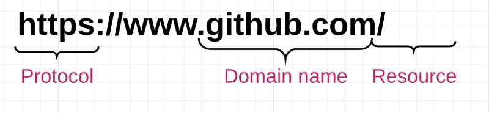
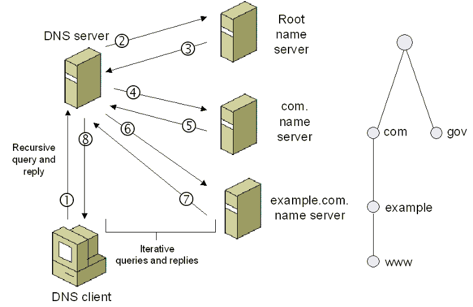
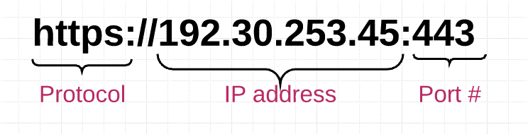
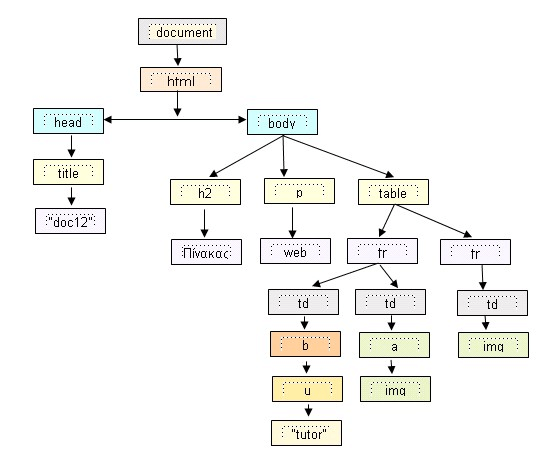

How WEB Works: A Guide for Beginners in Web Development
If you're a newbie web developer, you probably already know how the world wide web works, at least at a basic level. But when you start explaining to someone how a website works, you fail.
What is an IP address? How does the client-server model actually work? We will cover these topics in the article.
Let's start where we've all been before: enter "www.github.com" into your browser's address bar and watch the page load. At first glance, it may seem that some kind of magic is happening here. But let's look deeper.
Defining parts of the WEB
Server
A computer that is connected to the Internet and also has an IP address.
The server waits for requests from other machines (for example, the
client) and responds to them. Unlike your computer (i.e. the client),
which also has an IP address, the server has special server software
installed and running that tells it how to respond to incoming requests
from your browser. The main function of a web server is to store,
process and deliver web pages to clients. There are many types of
servers, including web servers, database servers, file servers,
application servers, and more.
Client
An application, such as Chrome or Firefox, that is running on a computer
and connected to the Internet. Its main role is to take user commands
and translate them into requests to another computer called a web
server. Although we typically use a browser to access the Internet, you
can think of your entire computer as a "client" in the client-server
model. Each client computer has a unique address, called an IP address,
which other computers can use to identify themselves.
IP Address
Internet Protocol Address. Numeric identifier of a device (computer,
server, printer, router, etc.) on a TCP/IP network. Every computer on
the Internet has an IP address, which it uses to identify and
communicate with other computers. IP addresses have four sets of numbers
separated by decimal points (for example, 244.155.65.2). This is called
a "logical address". To determine the device's location on the network,
the logical IP address is converted to a physical address by TCP/IP
protocol software. This physical address (i.e. MAC address) is built
into the hardware.
ISP
Internet service provider. The Internet provider is an intermediary
between the client and servers. To the typical homeowner, the IP is
usually the “cable company.” When the browser receives a request from
you to go to www.github.com, it doesn't know where to look for
www.github.com. It is the ISP's job to do a DNS (Domain Name System)
lookup to ask what IP address the site you are trying to visit is
configured to.
DNS
Domain Name System. A distributed database that stores the
correspondence between domain names of computers and their IP addresses
on the Internet. Don't worry about how the "distributed database" works
now: just know that DNS exists to allow users to enter www.github.com
instead of an IP address.
TCP/IP
The most widely used communication protocol. A "protocol" is simply a
standard set of rules for something. TCP/IP is used as a standard for
transmitting data over networks.
Port
A 16-bit integer that identifies a specific port on a server and is
always associated with an IP address. It serves as a way to identify a
specific process on a server to which network requests can be forwarded.
HTTP
Hypertext Transfer Protocol. A protocol used by web browsers and web
servers to communicate with each other over the Internet.
URL
URLs identify a specific web resource. Simple example
https://github.com/someone. The URL specifies the protocol ("https"),
the hostname (github.com), and the filename (someone's profile page).
The user can retrieve the web resource identified by this URL via HTTP
from a network host whose domain name is github.com.
Transition from code to web page
Now we have the necessary foundation to understand what happens behind the scenes when we enter a Github address into the search bar:
1. Enter the URL in the browser
2. The browser parses the information contained in the URL. This includes the protocol (“https”), domain name (“github.com”), and resource (“/”). In this case, there is nothing after the ".com" that points to a specific resource, so the browser only knows how to get the main (index) page.
3. The browser contacts the ISP to perform a DNS lookup of the IP address for the web server that hosts the www.github.com web server. The DNS service will first contact the root name server, which looks up https://www.github.com and responds with the name server IP address for the .com top-level domain. Having received this address, the DNS service makes another request to the name server, which is responsible for the .com domain and requests the address https://www.github.com.
4. After receiving the IP address of the destination server, the ISP sends it to the web browser. 
5. Your browser takes the IP address and the specified port number from the URL (the default HTTP protocol is port 80 and HTTPS is port 443) and opens a TCP socket. At this point, the connection between the web browser and the web server is finally established.
6. Your web browser sends an HTTP request to the web server of the main HTML page www.github.com.
7. The web server receives the request and looks up this HTML page. If the page exists, the web server prepares a response and sends it back to the browser. If the server cannot find the requested page, it sends an HTTP 404 error message (the same Error 404 Not Found), which means “Page not found.”
8. Your web browser takes the HTML page it receives and then parses it, doing a full crawl to find other resources that are listed in it: URLs for images, CSS files, JavaScript files, etc.
9. For each resource listed, the browser repeats the entire process above, making additional HTTP requests to the server for each resource.
10. Once the browser has finished downloading all other resources listed on the HTML page, the page will be loaded into the browser window and the connection will be closed.
Getting the final picture
But wait - the work isn't finished yet! Now that your browser has the resources that make up a website (HTML, CSS, JavaScript, images, etc.), it must go through several steps to present the resources to you in a readable web page. The browser has a rendering engine that is responsible for displaying content. The rendering engine receives the contents of resources in small chunks. Then there is an HTML parsing algorithm that tells the browser how to parse the resources.
After analysis, a tree structure of DOM elements is created. DOM (Document Object Model) stands for Document Object Model and is a shorthand for representing objects located in an HTML document. These objects - or "nodes" - of each document can be manipulated using scripting languages such as JavaScript.
After building the DOM tree, the style sheets are analyzed to understand how to determine the style of each node. Using this information, the browser traverses down the DOM nodes and calculates the CSS style, position, coordinates, etc. for each node. Once the browser has DOM nodes and their styles, it is finally ready to draw the page on the screen accordingly. The result is everything you have ever viewed on the Internet.